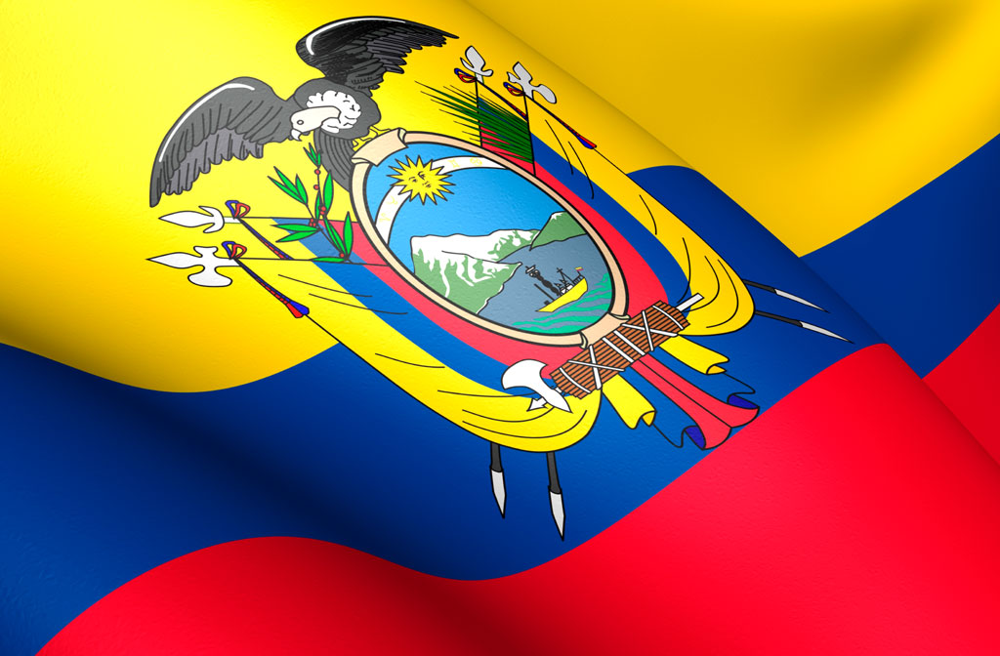
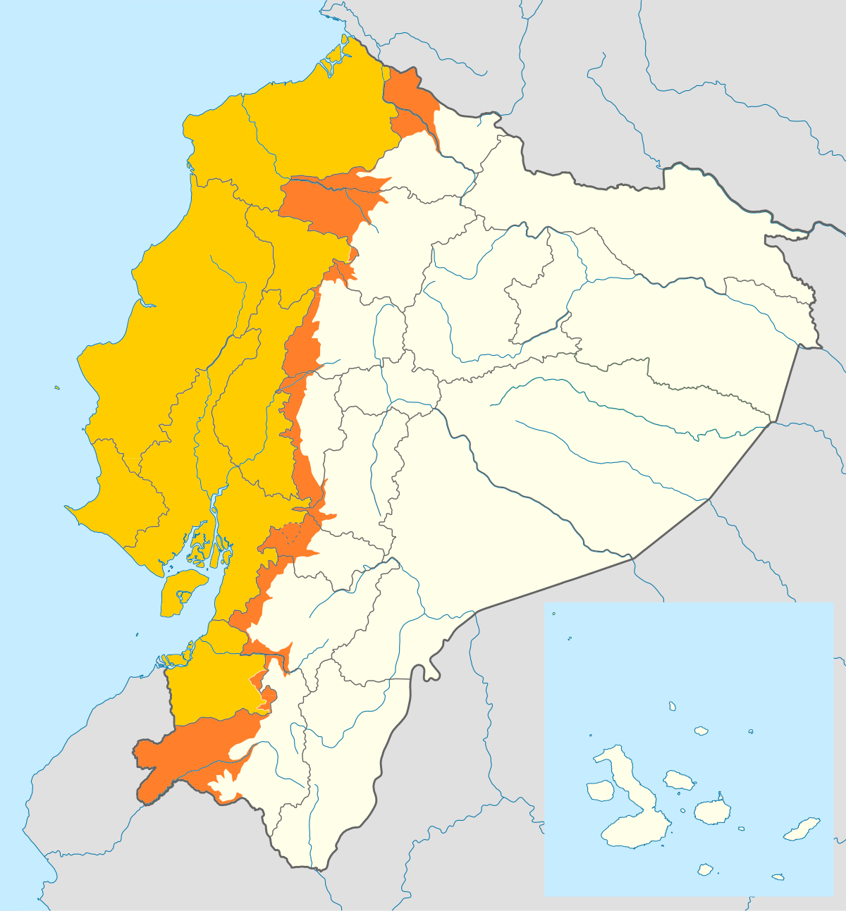

Educación Virtual | Situacion Ecuador"
En el Ecuador, la educación ha puesto en mira a las plataformas en línea para cumplir con sus responsabilidades habituales. Ahora estamos obligados a prescindir de la presencialidad, lo que podría representar un esfuerzo para algunas perosnas.
Hay varios niveles de enseñanza. En Ecuador son: inicial, básico, bachillerato, pregrado técnico y tecnológico, pregrado universitario y posgrado universitario. Cada uno de los niveles educativos tiene distintos modelos docentes, mecanismos de funcionamiento, necesidades en la enseñanza-aprendizaje, además de estrategias, paradigmas, demandas, dificultades y recompensas. Todos son distintos y todos requieren de distintos profesionales.
Region Costa
El ciclo lectivo 2020-2021 para el régimen costa se iniciará el próximo 4 de mayo, segun lo dispuesto por el Ministerio de Educación del Ecuador. Durante las primeras semanas lo estudiantes realizarán las actividades "mediante el uso de medios virtuales".
Region Sierra y Amazónia
Ante la pandemia, Ecuador mantiene la suspensión de clases desde el 13 de marzo. Las actividades laborales presenciales también están interrumpidas al menos hasta el próximo domingo, para motivar el confinamiento de personas.
Alrededor de dos millones de estudiantes terminarán el período escolar con clases virtuales ante la pandemia de coronavirus. La medida es para los estudiantes de escuelas y colegios de la sierra andina y la región amazónica, que cumplen el año lectivo 2019-2020 y debía concluir en junio.